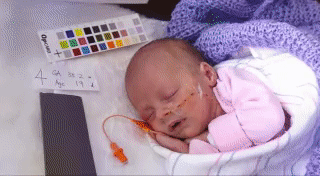
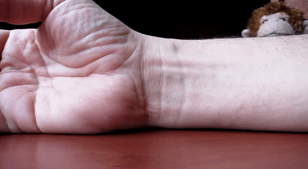
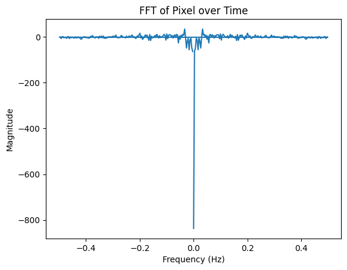
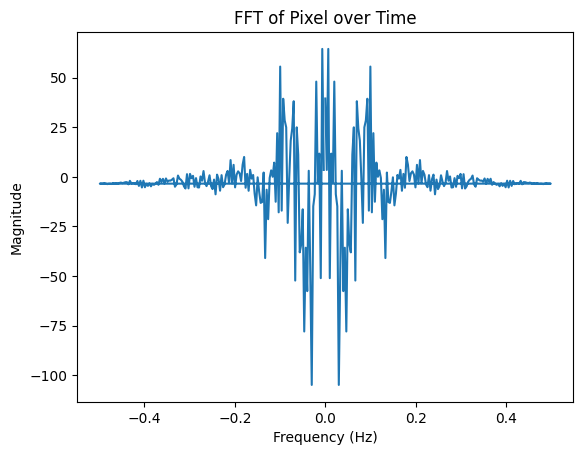

Part 1. Laplacian Pyramid
We construct the Laplacian pyramid by repeatedly downsampling each frame of the video, then rescaling all the downsampled frames to the original size. Because both downsampling ignores the channel dimension, we merge the time dimension with the channel dimension to allow clean vectorization, and restore the time dimension afterwards.
Part 2. Temporal Filtering + Part 3. Amplification + Part 4. Reconsturction
To magnify the specific temporal frequencies, we create a laplacian stack for each frame, and then use scipy.signal.butter to filter along the time domain for each layer of the laplacian stack. Then we attenuate based on a magnification factor and alpha. Finally, we reconstruct the Laplacian Stack to get the following results.
Following are results of baby2.mp4, face.mp4, and wrist.mp4, magnifying the frequencies between 0.4 and 3.0 Hz.
|

|

|

|
Bells and Whistles: Fourier Analysis before Attenuation
In the following, we analyze the FFT of the pixel (0,0) at the first laplacian layer for the red channel of the face video.
Bells and Whistles: Fourier Analysis After Attenuation
In the following, we analyze the FFT of the pixel (0,0) at the first laplacian layer for the red channel of the face video after attenuating.
Bells and Whistles: Trying out difference sets of parameters
To magnify the specific temporal frequencies, we create a laplacian stack for each frame, and then use scipy.signal.butter to filter along the time domain for each layer of the laplacian stack. Then we attenuate based on a magnification factor and alpha. Finally, we reconstruct the Laplacian Stack to get the following results.
Following are results of baby2.mp4, face.mp4, and wrist.mp4, magnifying the frequencies between [0.2, 5.0], alpha = 100, magnification factor = 1.

|

|

|
Following are results of baby2.mp4, face.mp4, and wrist.mp4, magnifying the frequencies between [0.83, 14.0] Hz, alpha=200, magnification_factor=2.

|

|

|
Bells and Whistles: Augmenting Lower Amplitudes
We augment lower frequencies (0.3, 1.0) Hz where alpha is 300 and magnification factor is 2 for baby.mp4 We see that we augment the breathing.